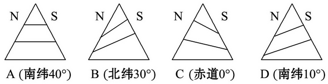
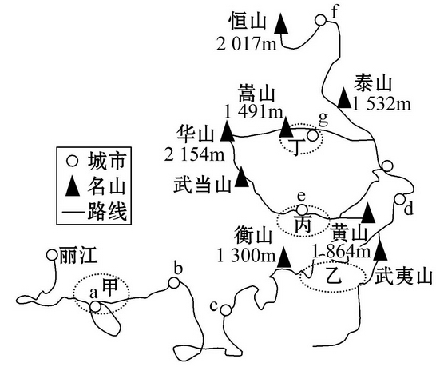
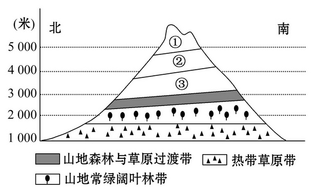
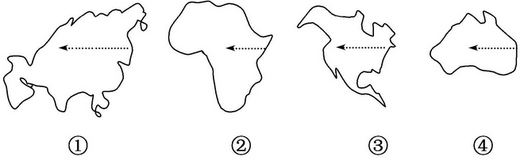

None - Fade - Slide - Convex - Concave - Zoom
选择班级
幻灯片样式
Black (default) -
White -
League -
Sky -
Beige -
Simple
Serif -
Blood -
Night -
Moon -
Solarized
1.关于自然带的叙述，不正确的是( )
A.除南极洲外，各大洲均有亚热带常绿硬叶林带
B.亚寒带针叶林带只分布在北半球
C.热带草原带在非洲分布最广
D.温带落叶阔叶林带仅分布在亚欧大陆西岸
2.下列叙述符合由赤道到两极的地域分异规律的是( )
A.自然带随纬度变化方向更替
B.自然带沿纬线方向更替
C.自然带沿东西方向更替
D.自然带沿南北方向延伸
2011年暑假，山东青岛市一旅行社组织了高中学生西北行的夏令营活动。第一站从青岛乘车到了内蒙古的包头，第二站从包头到新疆阿克苏，据此回答3、4题。
3.青岛学生从旅行社出发到包头，从内蒙古的包头到新疆的阿克苏沿线的自然景观的变化体现了地理环境的( )
A.由赤道到两极的地域分异规律
B.从沿海向内陆的地域分异规律
C.从山麓到山顶的垂直地域分异规律
D.非地带性分异规律
4.内蒙古包头所在地区所属的自然带为( )
A．温带落叶阔叶林带
B．亚热带常绿阔叶林带
C．温带草原带
D．亚寒带针叶林带
5.下列四幅图示中，正确表示坡向对自然带影响的是( )
A.A
B.B
C.C
D.D
6.影响下列分异规律的因素中以水分为基础的是( )
A.同一海拔高度上珠峰南北坡植被不同
B.珠峰由山麓到山顶自然带有明显的更替
C.坐火车看到从连云港到乌鲁木齐植被明显变化
D.沿京九铁路坐火车看到从北京到九龙植被明显变化
2010年5月19日下午，来自全国100所高校的学生代表在浙江宁海西门举着各自的校旗，齐声发出了“5·19，我要游”的震撼口号，走访当年徐霞客从宁海开始出游的古道，支持“5·19”成为中国旅游日。下图为考察路线示意图，据此回答1、2题。
1．导致考察路线上陆地自然景观
差异的最直接因素是( )
A.热量 B.水分C.正午太阳高度
D.距海远近
2．他们在黄山、衡山、泰山、华山考察中都能见到的自然带是( )
A．山地常绿阔叶林带
B．山地针叶林带
C．山地落叶阔叶林带
D．山地冰雪带
下图表示的是某山垂直自然带的分布。读图回答3、4题。
3.图中①②③依次代表( )
A.积雪冰川带、高寒荒漠带、高山草原带
B.高寒荒漠带、山地落叶阔叶林带、高山草原带
C.高寒荒漠带、积雪冰川带、高山草原带
D.高山草原带、山地针叶林带、高寒荒漠带
4.决定该山山麓自然带的主导因素是( )
A.纬度位置
B.海陆位置
C.山脉走向
D.山体坡度
下图是四大陆轮廓图，据图回答5、6题。
5.沿图中箭头所在位置和所示方向，从沿海到内陆自然景观变化相似的是( )
A.①②
B.①②③
C.①③④
D.①②③④
6.自然景观沿图中箭头所示方向产生变化的主要原因是( )
A.热量差异引起的
B.水分差异引起的
C.海拔高度差异引起的水热条件的变化
D.纬度位置差异引起的